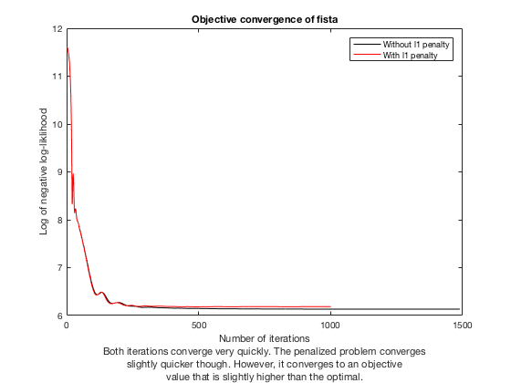
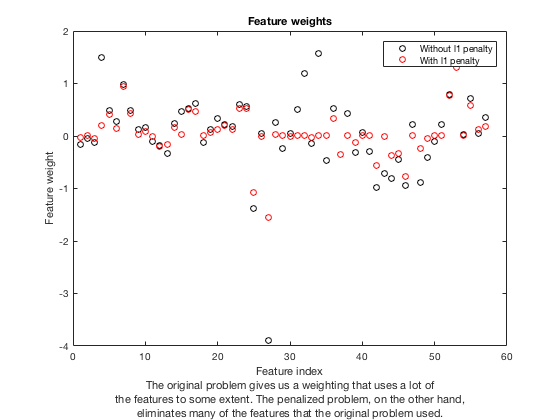

Liam Madden
Homework 8 Problem 2
Contents
Abstract
We added an l1 penalty to our objective. We then applied fista to both the original problem and the penalized problem. The original problem converged very quickly, but the penalized problem converged quicker. However, the penalized problem converged to an objective value (according to our original objective function) that was slightly higher than what the original problem converged to. Also, the weighting of features found for the original problem used a lot more of the features than the weighting found for the penalized problem. This makes sense since the penalized problem had an added penalty that essentially penalized nonzeros in the weighting (since the l1 norm is generally used as a convex relaxation of the l0 "norm"). However, the training mis-classification rates for the two problems were both very small: 5.15% and 5.92% respectively. The same was true for the testing mis-classification rates: 5.19% and 5.92%. This shows that the added l1 penalty only made the classification accuracy slightly worse, and so is worth the added benefit of avoiding overfitting the data.
Clear
clear all close all
Load
load('spamData.mat')
Format
Xtrain = log(Xtrain+0.1); Xtest = log(Xtest+0.1); ytrain = 2*ytrain-1; ytest = 2*ytest-1;
Indices
p = length(Xtrain(1,:)); ntrain = length(Xtrain(:,1)); ntest = length(Xtest(:,1));
Objective function (negative log-likelihood)
sigma = @(a) 1./(1+exp(-a));
muTrain = @(w) sigma(ytrain.*(Xtrain*w));
lTrain = @(w) -sum(log(muTrain(w)));
gradlTrain = @(w) -Xtrain'*(ytrain.*(1-muTrain(w)));
w0 = ones(p,1);
prox = @(y,gamma) y;
proxr = @(y,gamma) sign(y).*max(abs(y)-gamma*5,0); % 5 is lambda
Lf = norm(Xtrain)^2/4;
Solve
tol = .001; w = fista(w0,lTrain,gradlTrain,Lf,prox,tol,1e4,1e3); wstar = w(:,length(w(1,:))); wr = fista(w0,lTrain,gradlTrain,Lf,proxr,tol,1e4,1e3); wrstar = wr(:,length(wr(1,:)));
Plot convergence
iter = [1:length(w(1,:))]'; iterr = [1:length(wr(1,:))]'; figure(1) plot(iter,log(lTrain(w(:,iter))),'-k',iterr,log(lTrain(wr(:,iterr))),'-r') xlabel({'Number of iterations','Both iterations converge very quickly. The penalized problem converges','slightly quicker though. However, it converges to an objective','value that is slightly higher than the optimal.'}) ylabel('Log of negative log-liklihood') legend('Without l1 penalty','With l1 penalty') title('Objective convergence of fista')
Plot weights
figure(2) plot(1:p,wstar,'ok',1:p,wrstar,'or') xlabel({'Feature index','The original problem gives us a weighting that uses a lot of','the features to some extent. The penalized problem, on the other hand,','eliminates many of the features that the original problem used.'}) ylabel('Feature weight') legend('Without l1 penalty','With l1 penalty') title('Feature weights')
Training mis-classification rate (without penalty)
sigmawstar = sigma(Xtrain*wstar); ytrainApprox = ones(ntrain,1); for i = 1:ntrain if sigmawstar(i) <= 0.5 ytrainApprox(i) = -1; else end end errorTrain = norm(ytrainApprox-ytrain,1)/2/ntrain; disp(errorTrain)
0.0515
Training mis-classification rate (with penalty)
sigmawrstar = sigma(Xtrain*wrstar); ytrainApproxr = ones(ntrain,1); for i = 1:ntrain if sigmawrstar(i) <= 0.5 ytrainApproxr(i) = -1; else end end errorTrainr = norm(ytrainApproxr-ytrain,1)/2/ntrain; disp(errorTrainr)
0.0519
Testing mis-classification rate (without penalty)
sigmawstarTest = sigma(Xtest*wstar); ytestApprox = ones(ntest,1); for i = 1:ntest if sigmawstarTest(i) <= 0.5 ytestApprox(i) = -1; else end end errorTest = norm(ytestApprox-ytest,1)/2/ntest; disp(errorTest)
0.0592
Testing mis-classification rate (with penalty)
sigmawrstarTest = sigma(Xtest*wrstar); ytestApproxr = ones(ntest,1); for i = 1:ntest if sigmawrstarTest(i) <= 0.5 ytestApproxr(i) = -1; else end end errorTestr = norm(ytestApproxr-ytest,1)/2/ntest; disp(errorTestr)
0.0592